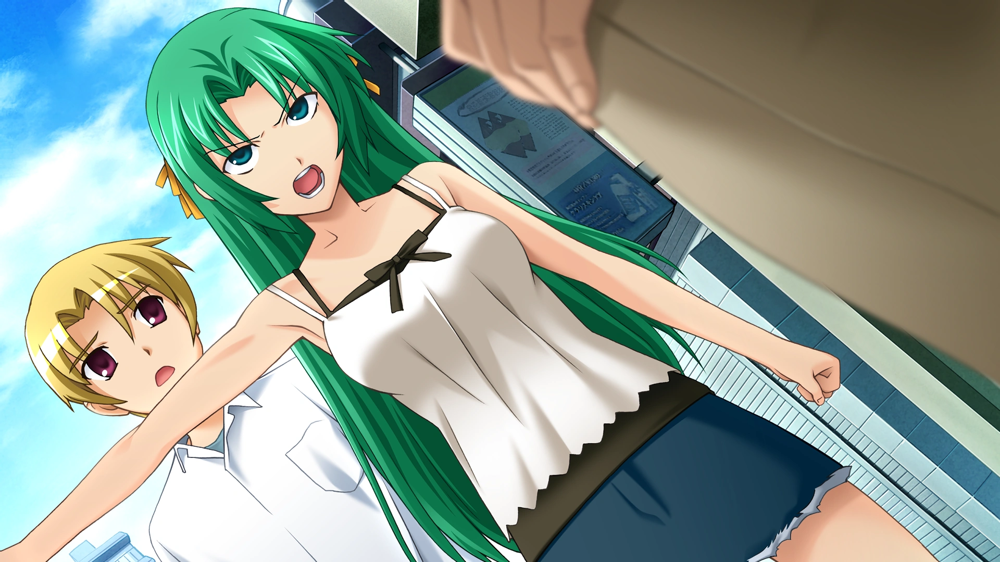
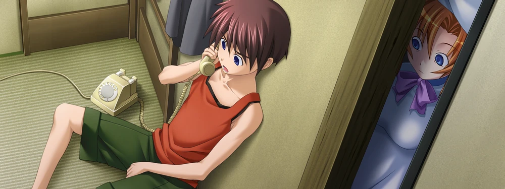
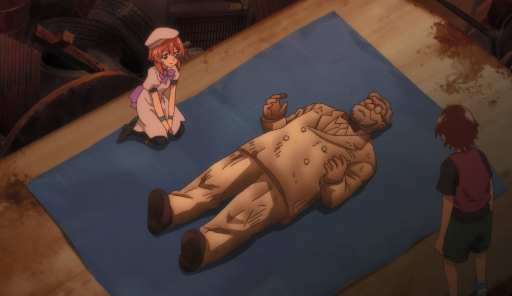

The Cicada Chronicle
June 20, 1983
WATANAGASHI FESTIVAL CONCLUDES; TWO INCIDENTS REPORTED AFTER NIGHT CEREMONY

The annual Watanagashi Festival concluded last evening at the Hinamizawa Furude Shrine, drawing villagers and visiting spectators for the customary rites honoring the local deity, Oyashiro-sama. The highlight of the evening was the traditional kagura performance by shrine maiden Rika Furude, who performed the sacred dance before a hushed crowd beneath lantern light. Clad in ceremonial robes and bearing the ritual hoe, Miss Furude enacted the ancient rite symbolizing purification and the warding off of calamity. The performance concluded to sustained applause. However, in the early hours following the festival, authorities confirmed two serious incidents.
Visiting Photographer Found Dead; Clinic Worker Missing
Mr. Jiro Tomitake, a freelance photographer known for documenting the festival each year, was discovered deceased late last night. Officials have not released full details regarding the cause of death, stating only that an investigation is ongoing.
In addition, Ms. Miyo Takano, affiliated with the Irie Clinic and a frequent attendee of the festival, has been reported missing. She was last seen near the shrine grounds following the ceremony. Search efforts are currently underway.
The pairing of one confirmed death and one disappearance on the night of Watanagashi has renewed quiet speculation among villagers. For several consecutive years, similar incidents have occurred in close proximity to the festival. Many residents refer to this recurring pattern as “Oyashiro-sama’s Curse."
The Beginning of the “Curse”
Local memory dates the origin of this so-called curse to Shōwa 54 (1979), during unrest surrounding the now-canceled Hinamizawa Dam Project. That year, on the night of the Watanagashi Festival, a violent altercation broke out at the dam construction site. According to contemporary reports, a confrontation escalated between the construction manager and several workers. What began as a fight reportedly spiraled out of control, and the manager was beaten to death with tools found on site.
Fearing prosecution, the group allegedly conspired to conceal the crime by dismembering the body into six parts, with each participant tasked with hiding a portion. Despite this effort, one of the men later sought medical treatment for injuries sustained in the struggle and confessed to authorities. The remaining assailants turned themselves in. However, the presumed leader of the group disappeared before he could be apprehended, and one portion of the remains was never recovered.
To the people of Hinamizawa, the events of that night marked the first instance of a death and a disappearance tied to Watanagashi. In the years that followed, each festival was accompanied by another pair of tragedies. Whether coincidence or something more, the pattern became inseparable from the village’s folklore. And so, what began as a criminal case during a period of political tension gradually transformed into legend — the perceived judgment of Oyashiro-sama himself.
Origins of a Troubled Tradition
The Watanagashi Festival, whose name translates roughly to “cotton drifting,” traditionally centers on purification. Cotton offerings are symbolically cast into the river, representing the casting away of sin and misfortune.
Historical accounts, however, suggest that the festival’s distant past was more severe. During periods of famine or unrest, public punishments were reportedly carried out in the deity’s name. Oral histories describe ritualized torture and harsh communal justice intended to expel corruption from the village. These practices were abolished generations ago, but echoes remain in ceremonial symbolism.
Furude's shrine dance preserves these motifs in gentler form. The downward arc of the ritual hoe, once associated with tangible punishment, now signifies spiritual cleansing. The measured circling steps evoke confinement not as retribution, but as containment of misfortune. What was once literal has become allegorical — a transformation from judgment to prayer.
Yet with each passing year that ends in tragedy, the old imagery regains potency in the minds of residents. As lanterns are dismantled and the cotton offerings drift downriver, Hinamizawa awakens to another uneasy morning. Whether the recent incidents prove to be tragic coincidence or something darker, the shadow of history continues to fall across the village’s most sacred night.
Local Girl Loses Crush and Makes It Everyone’s Problem
Authorities are continuing to piece together the chain of events that began with the return of Shion Sonozaki to Hinamizawa, and ended in a string of deaths now linked to her actions. Shion, one of the identical Sonozaki twins, the other being Mion Sonozaki, had previously been enrolled in an elite private academy. She reportedly fled the institution and returned to Hinamizawa without authorization.
Shortly after her return, Shion met Satoshi Hojo, who intervened when a group of local delinquents confronted her. The encounter reportedly left a lasting impression. Friends say Shion’s attachment to Satoshi intensified rapidly. According to multiple accounts, she expressed a fierce protectiveness toward him... and a bunring jealousy of his younger sister, Satoko Hojo. During a confrontation in which Satoko was mentioned, Shion snapped at a bystander correcting them on Satoshi’s identity:
“His pronouns are they/them!”Witnesses describe the outburst as less about grammar or gender identity and more about possession, an insistence that only she understood Satoshi properly.
When Satoshi vanished during the June 1982 Watanagashi Festival, Shion did not accept it as coincidence. She grew convinced that powerful forces within the village were responsible. Her suspicions centered on the Sonozaki family itself. Complicating matters further was a long-buried family secret: the twins had occasionally switched places throughout their childhood. Their names, too, had once been reversed. The girl known publicly as Shion was originally designated the heir, and it was she who received the Sonozaki family’s infamous “demon tattoo,” a mark signifying succession. The resentment from that arrangement appears to have festered. Doesn't help that one of those people ordered her to rip off her own fingernails. Ouch!
Investigators now believe that in the days following the most recent festival, Shion began systematically impersonating Mion. On the day after Watanagashi, Shion allegedly imprisoned Mion in the Sonozaki estate’s underground cellar. From that point forward, every public appearance of “Mion” was, in fact, Shion in disguise. During this period, several individuals were abducted and subjected to confinement and torture within the estate. Among them were Satoko and others Shion believed responsible, directly or indirectly, for Satoshi’s disappearance. The pattern mirrored the events previously attributed to “Mion” in the related incident now known as Watanagashi-hen. Authorities now confirm the perpetrator was Shion acting under her sister’s identity.
In what may have been the final exchange between the twins, Shion reportedly released Mion from captivity and instructed her to “go down to the well and apologize to Satoshi.” As Mion approached the well’s edge, Shion allegedly deployed a stun device. Mion fell into the shaft below and died from the fall. When police later intervened, they found Shion presenting herself as the surviving, imprisoned twin — creating initial confusion regarding which sister had died. Early reports mistakenly identified the victim.
The violence did not end there. Shion later confronted Keiichi Maebara, stabbing him in the abdomen. Witnesses say she declared that she had “successfully punished everyone responsible” for Satoshi’s disappearance, laughing and asking the absent boy to praise her. Keiichi survived the stabbing and was hospitalized. Under police surveillance, Shion attempted to re-enter her apartment through a window to avoid detection. She reportedly slipped while climbing and fell from the building. Witnesses state that moments before impact, she appeared to look upward and whisper an apology. She died at the scene.
While recovering in hospital, Keiichi reported repeated hallucinations of “Mion” standing at his bedside and torturing him. He later died of what doctors described as sudden cardiac failure. The string of deaths has left Hinamizawa shaken. What began as adolescent devotion escalated into impersonation, imprisonment, torture, and fatal confrontation. In the end, investigators believe Shion’s actions were driven by grief over Satoshi’s disappearance and a desire to punish those she held accountable, including her own twin. For many in the village, the tragedy underscores how quickly private obsession can metastasize into public catastrophe. As one resident put it quietly, “Yep, love can make you crazy. That, or the cicadas here. GOD, they're loud!”
Village Newcomer Begins to Distrust Friends
In the days following this year’s Watanagashi Festival, concern has quietly grown around the behavior of recent transfer student Keiichi Maebara, who appears to have become increasingly withdrawn and suspicious of those closest to him. Maebara, who moved to Hinamizawa earlier this month, had quickly integrated into a close-knit circle of classmates, including Rena Ryugu and Mion Sonozaki. The group was frequently seen together after school and was widely regarded as inseparable. However, following the reported death of Jirō Tomitake and the disappearance of Miyo Takano on the night of the festival, Maebara’s demeanor appears to have shifted markedly.
According to individuals familiar with the situation, Maebara had asked his friends about past incidents in the village — particularly those associated with the annual pattern of one death and one disappearance. When pressed, Ryugu and Sonozaki reportedly deflected or minimized discussion of prior years’ events. While such reluctance may reflect a desire to avoid painful subjects, acquaintances say Maebara interpreted the evasiveness differently.
“He started acting like they were hiding something from him,” one classmate commented. “Like he thought everyone else knew something he didn’t.” Observers report that Maebara has since become hyperaware of casual remarks, glances, and even moments of silence. Ordinary interactions — a pause before answering a question, a shared look between friends — appear to have taken on heightened significance for him.
Neighbors note that Maebara has declined invitations to group activities in recent days. Instead, he has been seen walking alone, often appearing tense or deep in thought. Those close to the situation describe a growing belief on Maebara’s part that the village’s long-standing “curse” is not merely superstition, but a reality enforced by unseen hands, possibly even by people within his own circle.
Ryugu, known for her upbeat personality and fondness for scavenging “treasures” from local refuse sites, reportedly attempted to visit Maebara’s home to check on him. Sonozaki, whose family holds longstanding influence in the community, has likewise been described as concerned. Both efforts, however, were allegedly met with suspicion rather than reassurance. Some residents suggest that Maebara, as an outsider, may be struggling to adjust to the insular nature of village life. Others worry that fear surrounding the recent festival incidents has amplified tensions.
In a town where history and rumor intertwine, even small misunderstandings can deepen quickly. The legacy of the 1979 construction-site killing, widely regarded by villagers as the first instance of “Oyashiro-sama’s Curse”, continues to color perceptions of present events. Against this backdrop, silence can be mistaken for conspiracy, and concern for coercion.
As Hinamizawa attempts to return to routine, Maebara’s apparent distrust underscores how fragile trust can become when fear takes root. Whether this strain between friends proves temporary or signals something more serious remains to be seen. For now, residents can only hope that communication, rather than suspicion, will prevail in the days ahead. (Yeah right.)
Illegal Dumping Site Loses Iconic Discarded Colonel Sanders Statue
An unusual disappearance has been reported from the informal dumping grounds on the outskirts of Hinamizawa, where a life-sized promotional statue resembling Colonel Sanders once stood among discarded appliances and broken furniture. The fiberglass figure, long missing an arm and weathered by years of exposure, had become an unofficial landmark for local youths. Residents report that the statue vanished sometime between late afternoon and evening earlier this week. While illegal dumping itself remains a concern for authorities, it is the disappearance of the statue that has sparked particular curiosity. The figure, affectionately nicknamed “Kenta-kun” by at least one local, was last seen propped against a rusted refrigerator near the treeline.
Witnesses claim a young girl was seen inspecting the statue shortly before its removal. The individual, identified as Rena Ryugu, is known to frequent the site in search of what she calls “treasures.” When approached for comment, Ryugu appeared flustered but earnest.
“Hauuu! He was too cute, so I had to take him home, I just had to!” she exclaimed. “Just like everything else here!”
Pressed for clarification, Ryugu elaborated no further, instead gesturing vaguely toward the surrounding piles of refuse with visible enthusiasm. The reporter notes that Ryugu’s definition of “cute” appears to extend beyond conventional standards. Previous items reportedly salvaged by the girl include cracked porcelain dolls, dented signage, and a headless stuffed animal described by one neighbor as “objectively alarming.”
Residents are divided. Some express mild annoyance at the removal of what they viewed as a quirky roadside fixture. Others are simply relieved that the already cluttered site has one less object contributing to its sprawl. One neighbor commented, “If she really did take it home, I hope her family has space.”
At press time, no formal complaint has been filed regarding the statue’s disappearance. Given its location at an unauthorized dumping site, ownership of the item remains unclear. As for “Kenta-kun,” his current whereabouts are presumed to be within Ryugu’s residence, possibly occupying a place of honor among her growing collection of reclaimed curiosities. Whether the Colonel’s new domestic life proves permanent remains to be seen. In Hinamizawa, it seems, even discarded mascots may yet find devoted admirers determined to “take them home.”